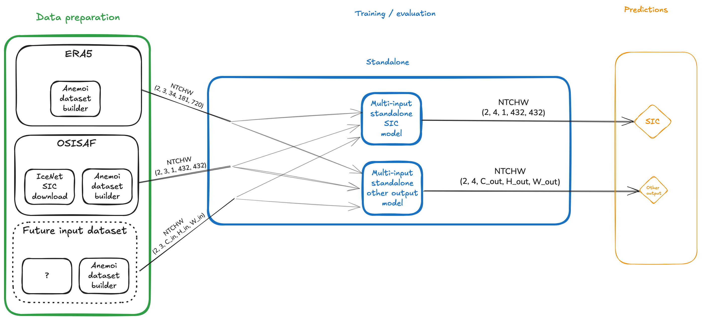
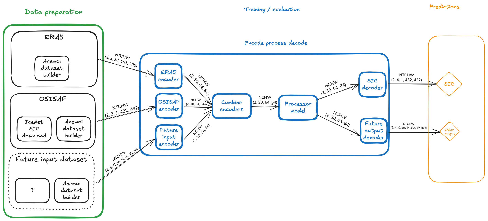

Adding new models#
Background#
An ice-station-zebra model needs to be able to run over multiple different datasets with different dimensions.
These are structured in NTCHW format, where:
Nis the batch size,Tis the number of history (forecast) steps for inputs (outputs)Cis the number of channels or variablesHis a height dimensionWis a width dimension
N and T will be the same for all inputs, but C, H and W might vary.
Taking as an example, a batch size (N=2), 3 history steps and 4 forecast steps, we will have k inputs of shape (2, 3, C_k, H_k, W_k) and one output of shape (2, 4, C_out, H_out, W_out).
Standalone models#
A standalone model will need to accept a dict[str, TensorNTCHW] which maps dataset names to an NTCHW Tensor of values.
The model might want to use one or more of these for training, and will need to produce an output with shape N, T, C_out, H_out, W_out.
As can be seen in the example below, a separate instance of the model is likely to be needed for each output to be predicted.

Pros:
all input variables are available without transformation
Cons:
hard to add new inputs
hard to add new outputs
Processor models#
A processor model is part of a larger encode-process-decode step.
Start by defining a latent space as (C_latent, H_latent, W_latent) - in the example below, this has been set to (10, 64, 64).
The encode-process-decode model automatically creates one encoder for each input and one decoder for each output.
The dataset-specific encoder takes the input data and converts it to shape (N, C_latent, H_latent, W_latent), compressing the time and channels dimensions.
The k encoded datasets can then be combined in latent space to give a single dataset of shape (N, k * C_latent, H_latent, W_latent).
This is then passed to the processor, which must accept input of shape (N, k * C_latent, H_latent, W_latent) and produce output of the same shape.
This output is then passed to one or more output-specific decoders which take input of shape (N, k * C_latent, H_latent, W_latent) and produce output of shape (N, T, C_out, H_out, W_out), regenerating the time dimension.

Pros:
easy to add new inputs
easy to add new outputs
Cons:
input variables have been transformed into latent space
time-step information has been compressed into the latent space